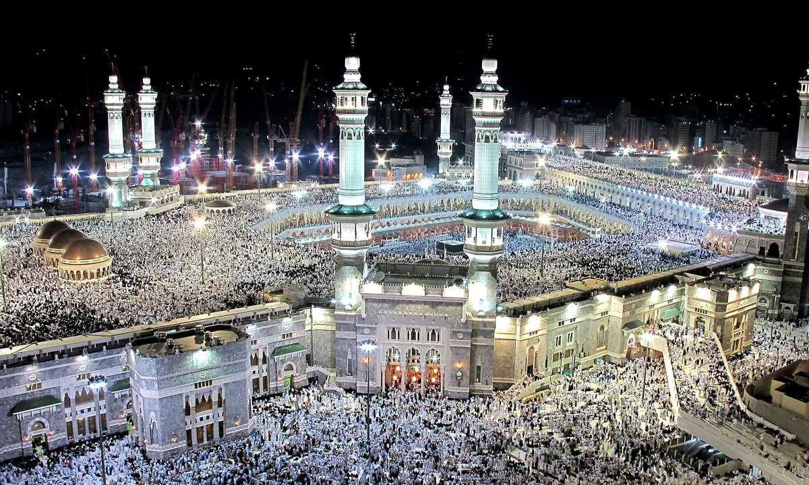
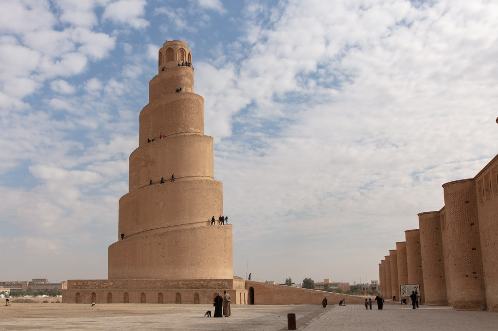
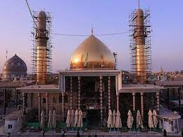
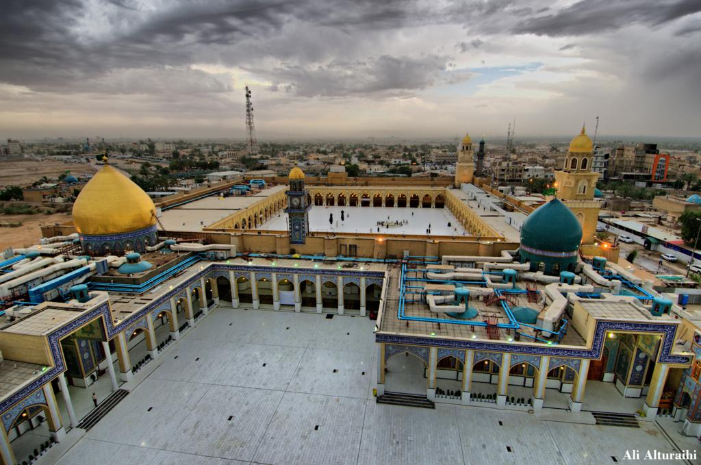
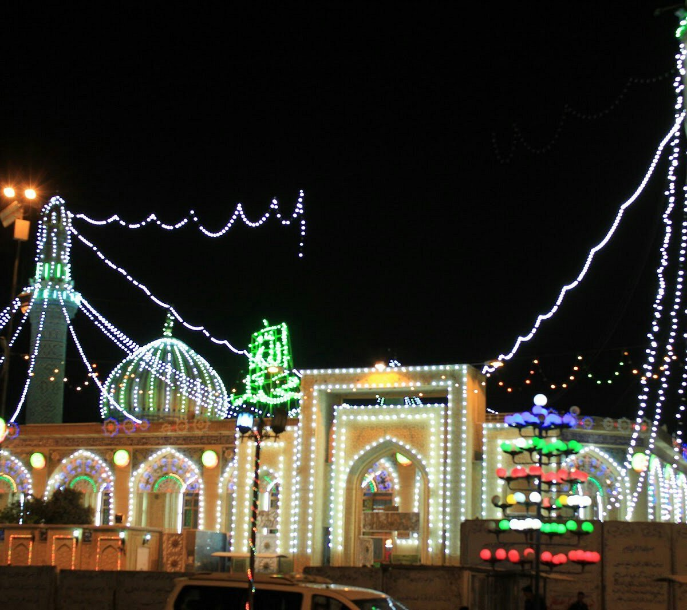
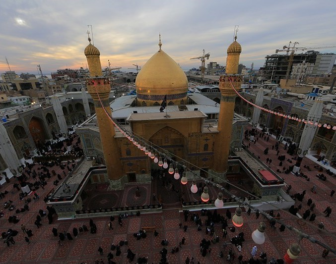
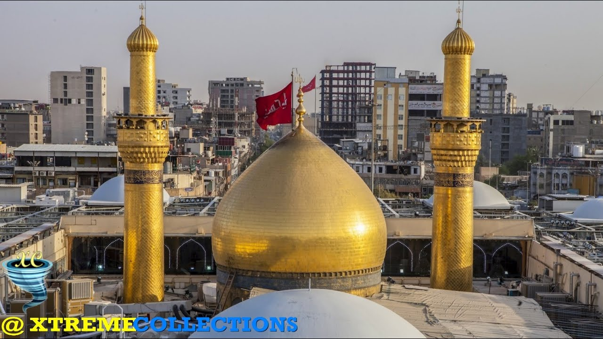

A mosque is a place of prayer for Muslims, or followers of the religion of Islam. The first mosque was the courtyard in the home of Muhammad, Islam’s founder. Today many mosques are large buildings with beautiful towers and domes.
The inside of a mosque always includes an open space for worship.
Rugs or mats may cover the floor. A nook in one wall,
called a mihrab, shows the direction of Mecca, Islam’s
holiest city. To the right of the mihrab is a platform
or small tower, called a minbar. Religious leaders climb steps up
to the minbar, where they speak to the worshippers. Every mosque must also have a source of running water for washing. Muslims are required to wash before prayer.
Mosques:-
Al-Mashʿar Al-Ḥarām

Great Mosque of Mecca, Arabic al-Masjid al-Ḥarām, also called Holy Mosque or Haram Mosque, mosque in Mecca, Saudi Arabia, built to enclose the Kaʿbah, the holiest shrine in Islam. As one of the destinations of the hajj and ʿumrah pilgrimages, it receives millions of worshippers each year. The oldest parts of the modern structure date to the 16th century.
The mosque, which comprises a rectangular central courtyard surrounded by covered prayer areas, is the site of several pilgrimage rituals. Pilgrims use the courtyard to perform the ritual circumambulation of the Kaʿbah, known as the ṭawāf. Two more sacred sites are located in the courtyard: the station of Abraham (Arabic: maqām Ibrāhīm), a stone which Islamic tradition associates with the Qurʾānic account of the rebuilding of the Kaʿbah by Abraham and Ismāʿīl (Ishmael), and the Zamzam well, a sacred spring. Immediately to the east and north of the courtyard are al-Ṣafā and al-Marwah, two small hills which pilgrims must run or walk between in a ritual known as the saʿy. In the 20th century an enclosed passageway between the two hills was appended to the mosque.
The modern building is the product of centuries of development. In the pre-Islamic era, the Kaʿbah, then a shrine for Arab polytheists, stood in an open space where worshippers gathered to pray and perform rituals. The Kaʿbah was also sacred to the first followers of the Prophet Muhammad. Following the Muslims’ emigration to Medina in 622 CE (the Hijrah), Muslims briefly prayed toward Jerusalem until a Qurʾānic revelation designated the Kaʿbah as the qiblah, or direction of prayer. When Muhammad returned to Mecca in 630, he ordered the destruction of the idols that were kept in the shrine, cleansing it of polytheistic associations.
Great Mosque of Samarra

The Abbasid caliphate began in the 8th century and was originally based in Baghdad. In 836, al-Mutawakkil's predecessor moved the capital roughly 70 miles north on the Tigris River to Samarra. The city's name is a shortened version of the Arabic sentence ''a joy for all those who see it''.
Soon after al-Mutawakkil came to power in 847, he commissioned many new buildings including the Great Mosque of Samarra, a new congregational mosque where all the men of the city could gather for Friday prayer. It likely replaced an earlier one nearby. He also commissioned a whole new city north of Samarra and named it for himself (Mutawakkiliya) as well as more than a dozen palaces.
The Great Mosque of Samarra was commissioned in 848 and built along the Tigris River between 849 and 851. Its spiral minaret, known today as Malwiya Tower, was originally connected to the mosque and its ziyada, the enclosed field between the mosque and the surrounding wall, by a bridge. As many as 80,000 people could worship at the Great Mosque of Samarra. It extended the growing city to the east by moving into an old hunting ground that abutted the city.
The Samarra Mosque was almost entirely razed by a Mongol Army led by Hulagu Khan, one of Genghis Khan's grandsons, in 1258, shortly after he laid siege to Baghdad. Hulagu, whose brother became the Great Khan in 1251 and put him in charge of defeating Muslim rulers in the southwest portion of the Mongol Empire, wreaked havoc on a vast swath of territory that included modern Iran, Syria, Iraq, and Egypt. The only parts of the Great Mosque that remained were the thick walls and the minaret.
They remained largely intact for hundreds of years. A major German excavation in the area took place in the early 20th century, and the Iraqi government attempted some reconstruction efforts in the mid-20th century.
Al-Askari Mosque

It is one of the most important Shia shrines in the world. It was built in 944. The dome was destroyed in a bombing by extremists in February 2006 and its two remaining minarets were destroyed in another bombing in June 2007, causing widespread anger among Shias.
The Al-Askari Mosque at Samarra, northwest of Baghdad, Iraq, contains the tombs of the 10th and 11th imams revered by Shia pilgrims. In 2006 and 2007 terrorist bombs damaged the golden dome and destroyed the minarets but they have been restored.
Great Mosque of Kufa

The Great Mosque of Kufa, also known as Masjid al-Kūfa, is one of the oldest and holiest surviving mosques in the entire world, and it is located in the city of Kufa, within the central part of the Republic of Iraq.
Considered to be built in 7 century by the Caliph Omar, there are several legends connected to this place, among which some claim that Adam’s bones were buried on the site, having been carried by Noah on board the Ark, and event the site has been identified in the Shia Islam as the place where Noah built his Ark.
It is revealed that the mosque dates back from the year 670, although it was built on top of much older foundations. Covering an area of about 11,000 sq m (120,000 sq ft), there are 9 sanctuaries and 4 traditional locations, while its design is a bit similar to the palaces of Persia, before the Islam was accepted as a religion.
The entire structure is 110 meters (361 feet) long, 101 meters (331 feet) wide, while the surrounding walls are astonishing 10 meters (33 feet) above the surrounding city.
Those gates have different names, and different symbolic meaning, such as: Gate of the Threshold, Gate of Kinda, Gate of al-Anmat, Gate of the Elephant, also known as the Gate of the Snake, and Gate of Hani ibn Urwa. As it is the case with many other historic structures, the Great Mosque of Kufa has seen also redevelopment and great improvement.
Abu Hanifa Mosque

Abu Hanifa Mosque, one of the most prominent mosques in Baghdad, Iraq. It is built around the tomb of Abu Hanifa an-Nu’man (lived circa 699-767 CE), who became the eponymous founder of the Hanafi madhhab — school of Islamic jurisprudence (fiqh). It is in the al-Adhamiyah district of northern Baghdad, which is named after Abu Hanifa’s reverential epithet Al-imam al-a’dham (The Great Leader).
Hanafi madhhab is followed by Muslims in the Levant, Central Asia, Afghanistan, Pakistan, India, Bangladesh, Egypt, Iraq, Turkey, the Balkans and by most of Russia’s Muslim community. There are movements within this school such as Barelvis and Deobandi, which are concentrated in South Asia.
Abu Ḥanifa was born in the city of Kufa in Iraq. His father, Thabit bin Zuta, was a trader from Kabul (Afghanistan). He ranks as one of the greatest jurists of Islamic civilisation and he attained a very high status in the various fields of sacred knowledge and significantly influenced the development of Muslim theology.
In 763, Abu Ja’far al-Mansur, the Abbasid monarch offered Abu Hanifa the post of Qazi al-Quzat (Chief Judge of the State), but he declined the offer, choosing to remain independent. His student Abu Yusuf was later appointed Qazi al-Quzat by the Caliph Harun al-Rashid. In his reply to al-Mansur, Abu Ḥanifa said that he was not fit for the post. Al-Mansur, who had his own ideas and reasons for offering the post, lost his temper and accused Abu Ḥanifa of lying. Abu Hanifa said “If I am lying, then my statement is doubly correct. How can you appoint a liar to the exalted post of a Chief Qazi (Judge)?” Incensed by this reply, the ruler had Abu Ḥanifa arrested, locked in prison and tortured. He was never fed nor cared for.
While he was in prison, Abu Hanifa died in 767 in Baghdad, either from being poisoned or from old age. It was said that his funeral was attended by 50,000 people, and was attended by al-Mansur himself.
During the rule of Buwayhid dynasty in Iraq (945–1055), in 985–986, a medium-sized mosque was built near Abu Hanifa’s tomb, by the orders of Amir Samsam al-Dawla (r. 983–987). In 1066, the mosque was restored by Sharaf al-Mulk Abu Sa’id al-Khwarizmi, who added a large dome and constructed the adjacent Hanafi school.
Imam Ali holy shrine

The Imam Ali Shrine is located in the heart of Najaf old town, the historic Islamic pilgrimage city. It is one of the great icons of Islamic religion and architecture, especially for the Shi'a, and is regarded by many as the finest masterpiece of Iraqi heritage.
The Abbasid caliph Harun al-Rashid built the first structure over the tomb of Imām 'Alī in 786, which included a green dome. The caliph al-Mutawakkil flooded the site in 850, but Abu'l-Hayja, the Hamdanid ruler of Mosul and Aleppo, rebuilt the shrine in 923, which included a large dome.
The Imam Ali Mosque is considered the one of the holiest sites in Shia Islam. It was built in 977 over the tomb of Ali, the cousin of the Prophet Muhammad. The NewsHour recently visited the shrine during Ramadan and watched as crowds grew throughout the evening.
Holy Shrine Of Imam Hossain

A shrine was built by Mukhtar ibn Abu `Ubayd ath-Thaqafi on the spot and a dome was created over the grave. Over the dome he fixed a green flag. Two entrance gates were made for the shrine. He also settled several families around the enclosure.
The Imam Husayn Shrine is the mosque and burial site of Husayn ibn Ali, the third Imam of Shia Islam, in the city of Karbala, Iraq.
It stands on the site of the Mausoleum of Husayn, who was a grandson of Muhammad, near the place where he embraced martyrdom during the Battle of Karbala in 680 CE
Bibilography
5.
Author Indrajit Choudhury
Article title: Abu Hanifa Mosque | Baghdad
Website title: Indrosphere
URL: URL FOR IMAGE 5